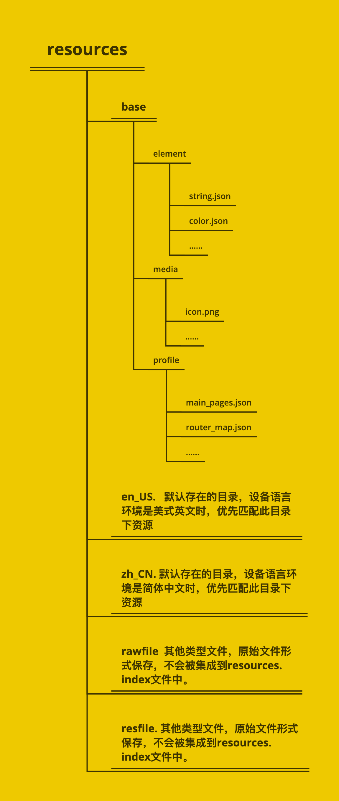

资源分类与访问 1 应用开发过程中，经常需要用到颜色、字体、间距、图片等资源，在不同的设备或配置中，这些资源的值可能不同。
应用资源
1 借助资源文件能力，开发者在应用中自定义资源，自行管理这些资源在不同的设备或配置中的表现。
系统资源
1 开发者直接使用系统预置的资源定义（即分层参数，同一资源ID在设备类型、深浅色等不同配置下有不同的取值）。
资源分类 1 应用开发中使用的各类资源文件，需要放入特定子目录中存储管理。资源目录的示例如下所示，base目录、限定词目录、rawfile目录、resfile目录称为资源目录，element、media、profile称为资源组目录．

资源目录 base目录 1 2 3 base目录是默认存在的目录，二级子目录element用于存放字符串、颜色、布尔值等基础元素，media、profile存放媒体、动画、布局等资源文件。 目录中的资源文件会被编译成二进制文件，并赋予资源文件ID。通过指定资源类型（type）和资源名称（name）引用。
限定词目录 1 2 3 en_US和zh_CN是默认存在的两个限定词目录，其余限定词目录需要开发者根据开发需要自行创建。二级子目录element、media、profile用于存放字符串、颜色、布尔值等基础元素，以及媒体、动画、布局等资源文件。 同样，目录中的资源文件会被编译成二进制文件，并赋予资源文件ID。通过指定资源类型（type）和资源名称（name）来引用。
限定词目录的命名要求 1 2 3 4 5 6 7 限定词目录可以由一个或多个表征应用场景或设备特征的限定词组合而成，包括移动国家码和移动网络码、语言、文字、国家或地区、横竖屏、设备类型、颜色模式和屏幕密度等维度，限定词之间通过下划线（_）或者中划线（-）连接。开发者在创建限定词目录时，需要遵守限定词目录的命名规则。 限定词的组合顺序：_移动国家码_移动网络码-语言_文字_国家或地区-横竖屏-设备类型-颜色模式-屏幕密度_。开发者可以根据应用的使用场景和设备特征，选择其中的一类或几类限定词组成目录名称。 限定词的连接方式：语言、文字、国家或地区之间采用下划线（_）连接，移动国家码和移动网络码之间也采用下划线（_）连接，除此之外的其他限定词之间均采用中划线（-）连接。例如：zh_Hant_CN、zh_CN-car-ldpi。 限定词的取值范围：每类限定词的取值必须符合限定词取值要求表中的条件，如表2。否则，将无法匹配目录中的资源文件。
限定词取值要求表
限定词类型
含义与取值说明
移动国家码和移动网络码
移动国家码（MCC）和移动网络码（MNC）的值取自设备注册的网络。MCC可与MNC合并使用，使用下划线（_）连接，也可以单独使用。例如：mcc460表示中国，mcc460_mnc00表示中国_中国移动。详细取值范围，请查阅ITU-T E.212
语言
表示设备使用的语言类型，由2~3个小写字母组成。例如：zh表示中文，en表示英语，mai表示迈蒂利语。详细取值范围，请查阅ISO 639
文字
表示设备使用的文字类型，由1个大写字母（首字母）和3个小写字母组成。例如：Hans表示简体中文，Hant表示繁体中文。详细取值范围，请查阅ISO 15924
国家或地区
表示用户所在的国家或地区，由2~3个大写字母或者3个数字组成。例如：CN表示中国，GB表示英国。详细取值范围，请查阅ISO 3166-1
横竖屏
表示设备的屏幕方向，取值如下：- vertical：竖屏- horizontal：横屏
设备类型
表示设备的类型，取值如下：- car：车机- tablet：平板- tv：智慧屏- wearable：智能穿戴
颜色模式
表示设备的颜色模式，取值如下：- dark：深色模式- light：浅色模式
屏幕密度
表示设备的屏幕密度（单位为dpi），取值如下：- sdpi：表示小规模的屏幕密度（Small-scale Dots Per Inch），适用于dpi取值为(0, 120]的设备。- mdpi：表示中规模的屏幕密度（Medium-scale Dots Per Inch），适用于dpi取值为(120, 160]的设备。- ldpi：表示大规模的屏幕密度（Large-scale Dots Per Inch），适用于dpi取值为(160, 240]的设备。- xldpi：表示特大规模的屏幕密度（Extra Large-scale Dots Per Inch），适用于dpi取值为(240, 320]的设备。- xxldpi：表示超大规模的屏幕密度（Extra Extra Large-scale Dots Per Inch），适用于dpi取值为(320, 480]的设备。- xxxldpi：表示超特大规模的屏幕密度（Extra Extra Extra Large-scale Dots Per Inch），适用于dpi取值为(480, 640]的设备。
rawfile目录 1 2 3 支持创建多层子目录，子目录名称可以自定义，文件夹内可以自由放置各类资源文件。 目录中的资源文件会被直接打包进应用，不经过编译，也不会被赋予资源文件ID。通过指定文件路径和文件名引用。
resfile目录 1 2 3 支持创建多层子目录，子目录名称可以自定义，文件夹内可以自由放置各类资源文件。 目录中的资源文件会被直接打包进应用，不经过编译，也不会被赋予资源文件ID。应用安装后，resfile资源会被解压到应用沙箱路径，通过Context属性resourceDir获取到resfile资源目录后，可通过文件路径访问。
资源组目录 1 资源组目录包括element、media、profile三种类型的资源文件，用于存放特定类型资源。
资源组目录说明表
目录类型
说明
资源文件
element
表示元素资源，以下每一类数据都采用相应的JSON文件来表征（目录下仅支持文件类型）。- boolean，布尔型- color，颜色- float，浮点型，范围是-2^128-2^128- intarray，整型数组- integer，整型，范围是-2^31-2^31-1- plural，复数形式- strarray，字符串数组- string，字符串，格式化字符串请参考API文档
element目录中的文件名称建议与下面的文件名保持一致。每个文件中只能包含同一类型的数据。- boolean.json- color.json- float.json- intarray.json- integer.json- plural.json- strarray.json- string.json
media
表示媒体资源，包括图片、音频、视频等非文本格式的文件（目录下只支持文件类型）。图片和音视频的类型说明见表4和表5。
文件名可自定义，例如：icon.png。
profile
表示自定义配置文件，其文件内容可通过包管理接口 获取（目录下只支持json文件类型）。
文件名可自定义，例如：test_profile.json。
图片资源类型表
格式
文件后缀名
JPEG
.jpg
PNG
.png
GIF
.gif
SVG
.svg
WEBP
.webp
BMP
.bmp
资源访问 模块内资源访问
通过” $r “或” $rawfile “引用资源
1 2 3 4 5 6 7 通过"$r"或"$rawfile"引用资源。 对于“color”、“float”、“string”、“plural”、“media”、“profile”等类型的资源，通过"$r('app.type.name')"形式引用。其中，app为resources目录中定义的资源；type为资源类型或资源的存放位置；name为资源名，开发者定义资源时确定。 对于string.json中使用多个占位符的情况，通过$r('app.string.label','aaa','bbb',444)形式引用。 对于rawfile目录资源，通过"$rawfile('filename')"形式引用。其中，filename为rawfile目录下文件的相对路径，文件名需要包含后缀，路径开头不可以"/"开头。
通过资源管理器获取
1 2 getContext.resourceManager.getStringByNameSync('app.string.XXX') 可获取字符串资源； getContext.resourceManager.getRawFd('rawfilepath') 可获取Rawfile所在hap包的descriptor信息，访问rawfile文件时需{fd, offset, length}一起使用。
跨模块资源访问
通过” $r “或” $rawfile “引用资源
1 2 3 通过"$r('[hsp].type.name')"形式引用 hsp为hsp模块名，type为资源类型，name为资源名称
通过资源管理器获取
1 2 3 通过createModuleContext(moduleName)接口创建同应用中不同module的上下文，获取resourceManager对象后，调用不同接口访问不同资源。 例如：getContext.createModuleContext(moduleName).resourceManager.getStringByNameSync('app.string.XXX')。
说明
1 hsp包名必须写在[]内，rawfile下有多层目录，需要从rawfile下面第一个目录开始写，如"$rawfile('[hsp].oneFile/twoFile/icon.png')"，使用"$r"和"$rawfile"跨包访问HSP包资源无法提供编译时的资源校验，需要开发者自行保证使用资源存在于对应包中。
系统资源访问 1 在开发过程中，分层参数的用法与资源限定词基本一致。对于系统资源，可以通过“$r('sys.type.resource_id')”的形式引用。其中，sys为系统资源；type为资源类型，取值包括“color”、“float”、“string”、“media”；resource_id为资源id。
overlay机制 1 overylay是一种资源替换机制，针对不同品牌、产品的显示风格，开发者可以在不重新打包业务逻辑hap的情况下，通过配置和使用overlay资源包，实现应用界面风格变换。overlay资源包只包含资源文件、资源索引文件和配置文件。
动态overlay使用方式
1 2 3 1、对应的overlay资源包需要放在对应应用安装路径下，通过hdc install的方式安装。如应用com.example.overlay的安装路径：data/app/el1/bundle/public/com.example.overlay/。 2、应用通过addResource(path)，实现资源覆盖；通过removeResource(path)，实现overlay删除。overlay资源路径需经过元能力的getContext().BundleCodeDir获取此应用对应的沙箱根目录，由应用的沙箱根目录+overlay资源包名称组成。如：let path = getContext().bundleCodeDir + "overlay资源包名称"，其对应沙箱路径为：/data/storage/el1/bundle/overlay资源包名称。
静态overlay配置方式
1 2 3 4 5 6 7 8 9 10 11 12 13 14 15 16 17 18 19 20 21 22 "app" :{ "bundleName" : "com.example.myapplication.overlay" , "vendor" : "example" , "versinCode" : "1000000" , "versionName" : "1.0.0.1" , "icon" : "$media:app_icon" , "label" : "$string:app_name" , }, "module" :{ "name" : "entry_overlay_module_name" , "type" : "shared" , "description" : "$string:entry_overlay_desc" , "deviceTypes" : [ "default" , "tablet" , ], "deliverywithInstall" : true , "targetModuleName" : "entry_module_name" , "targetPriority" : 1 , } }
说明
1 2 3 4 5 6 7 8 9 targetBundleName: 字符串类型，指定要overlay的bundleName targetModuleName: 字符串类型，指定要overlay的应用中的目标module targetPriority： 整数类型，指定overlay优先级 不支持Ability、ExtensionAbility、Permission等其他字段的配置 overlay不支持json类型的图片配置。